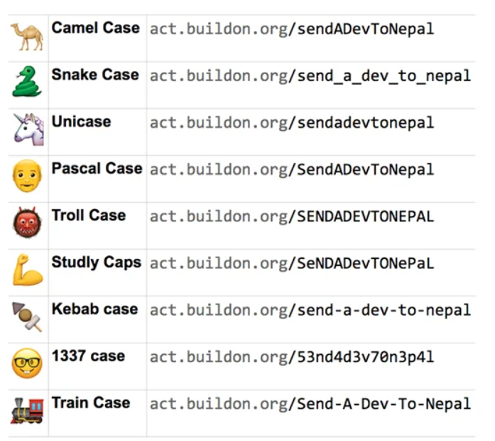

Objective
Purpose is to learn and know 10 programming languages, with OOP and what each is best at. I wish to do it in the next 1 year.
https://appetiser.com.au/blog/the-most-loved-and-hated-programming-languages-according-to-developers/
My List
- Python, FastApi <-- Data science, large no. for libraries and good support. Very slow.
- Javascript, TypeScript and NodeJS <-- Mostly in web development.
- SQL <-- DB tech
- Solidity <-- For EVM for making smart contracts
- Rust <-- Very fast and fast builds
- Go <-- Very fast and fast builds
- Swift <-- Dont know, pretty famous, learn more
- Java <-- Fast but verbose, used a lot. Core to understand DSA and LLD
- C <-- Close to assembly language, not much used.
- C++ <-- Fastest, old and widely used
- C# <-- Not sure about it, I think micrsoft made it maybe; need to check
- WebAssembly (WASM) <-- Used instead of javascript for internet.... Very fast
- Clojure <-- High Salary - Data centric
- Dart <-- Pretty fast
- Elixir <-- High Salary - Very fast with concurrency
- Scala <-- Pretty famous
Language independent basics to know
The below are applied to all languages and should be learnt as they are what is asked in interviews. Its not about interview, in general it is easier to learn a new language if you know the below.
- LLD - Design Patterns, mostly OOP based.
- SOLID PRINCIPLES by uncle bob - Using LLD and OOP to write complex, extendable, stable code.
- HLD - System design, not a must, but good to know, as they become motivation for learning.
- DS - Data Structures. Which is good for what. Add, remove, traverse, sort and search.
- Algo - Greedy, Dynamic, Loops and Recursion.
- CS Jargon - What is what, most important.
Individual Language Template
Once you know the following, you can say you know the language.
Basic
- 4 pillars of OOP - Encapsulation, Inheritance, Abstraction and Polymorphism.
- Variables, Constants, Primitive Types (string, int etc), Reference Types (Objects, Arrays, Functions)
- Operators - Arithmetic, Assignment, Comparison, Equality, Ternary, Logical, Bitwise
- Control Flow - if else, switch, for, while, do, break, continue.
- Garbage Collection and Memory Management.
Advance
- Refactoring - Splitting code into files or modules
- Parameterizing - Not hard coding variables, each variable can be input later.
- Error Handling (try catch) - Custom Errors for things which do not work.
- Coding Style Guide Knowledge for the language - What to be placed where.
- Code formatting and linting - Proper tabs and spaces and comments.
- Doc String or JSDocs - Comments for auto documentations.
- Testing (Unit, Integration, System and Acceptance) - https://www.geeksforgeeks.org/software-testing-basics/
- Concurrency, Parallelism, (Thread, Processes), Asynchronous - https://medium.com/swift-india/concurrency-parallelism-threads-processes-async-and-sync-related-39fd951bc61d
- Packaging and uploading to repo.
Pro
- Contributing to other projects on github
- Wrapping different language libraries into different. Like bringing in c++ lib to python wrapper.
Application Building
- Famous Frameworks
- Script, GUI and CLI. Desktop, Web and Mobile.
Team work and Other
- Git complete
- Docker complete
Modern Software Design
https://www.arjancodes.com/mindset
Mastering The Tools
- Setting Up Your Development Environment - Learn how to setup your development environment for success (this is more important than you think): which plugins/extensions to use and what settings to change to make your life easier.
- Types And Type Hints - Knowing what types and type hints are and how they work in Python is really important. In this lesson I dive into the details of type systems, how things work in Python, and show you best practices so you get the most out of using type hints.
- Data Structures - A core piece of software design is using data structures correctly. Each data structure has its own pros and cons. Knowing about these is going to help you take better decisions about which data structure to use when.
- Classes And Data Classes - Though this is not a complete introduction of object-oriented programming, I talk about classes and data classes in detail in this lesson and how they fit into software design.
- Inheritance, ABCs And Protocols - In the final lesson of this module, you learn about abstraction, which is a core element of software design. I cover the various ways in which you can achieve abstraction in Python to help you choose the best option for your design.
The 7 Principles Of Modern Software Design
The second part of the course presents the 7 Principles Of Modern Software Design. It takes many of the existing design principles and adapts them to the needs of the modern software designer. It goes way beyond object-oriented design by teaching you generic principles that apply to any programming language and paradigm, whether that’s object-oriented, purely procedural, or functional.
- Favor Composition Over Inheritance - Learn how to approach inheritance in code and use it in a balanced way by looking at several code examples.
- High Cohesion - Various techniques for making sure that the code you write has clear responsibilities.
- Low Coupling - Learn how to reduce coupling between different areas of your application so that your code is easier to maintain in the future.
- Start With The Data - What role does data play in the design process? When should we think about data and data structures in software design? And what is a practical process for modeling the data structures in your software?
- Depend On Abstractions - Abstractions such as ABCs and Protocols help reduce dependencies. In this lesson I show you how to use these abstractions effectively.
- Separate Creation From Use - You learn different ways of creating objects in a software system, and how to have better control as a software developer over how and when objects are being created.
- Keep Things Simple - As a software developer, how do you keep things simple? I talk about different ways to make sure your code stays simple, even if the application itself is complex.
Being A Responsible Developer
- Mixins - You learn what Mixins are, why you need to be very careful with them, and what the much better alternatives are.
- Dealing With Errors - Any application has to properly deal with errors. Here you learn how error handling works in Python, what the different possibilities are as well as some of the more advanced error handling mechanisms such as context managers.
- Setting Up A Complex Software Project - Learn about files, folders, modules, packages, absolute and relative imports. Learn how to structure your code properly, and what should generally be in a code repository.
Core Concepts

Software Design Patterns
Book - Design Patterns by Gang of Four LOL https://youtu.be/tv-_1er1mWI?t=33
Look Link --> https://refactoring.guru/design-patterns/
C --> Creational Patterns S --> Structural Patterns B --> Behavioural Patterns
- Singleton - C - Only once instantiated.
- Prototype - C - Inheritance from object created object, rather the class.
- Builder - C - Create object in step by step using methods instead of constructor, which does all at once. Chaining methods.
-
Factory - C - Instantiate from method or function rather than a variable manually.
-
Facade - S - Abstract away details. Make a sub class (facade) and create methods from parent complex class. Combining methods and functions to give final easy methods and functions to sub class.
-
Proxy - S - Replace original with a proxy, then work on proxy, in the end handle actual object.
-
Iterator - B - Normal iterations in steps. Pull Based System.
- Observer - B - Push Based system. One to Many relationship. Pub Sub kind of model, where one event broadcast and many listen. Kafta Redis RabbitMQ type.
- Mediator - B - Many to Many relationship. Many broadcast, many consume type.
-
State - B - Using conditional logics and switch statements to make object behave differently. OR create different class for different states. refer this part of video interface, then class implements... is used.
-
THEN there is MONADS https://www.youtube.com/watch?v=VgA4wCaxp-Q
- Here aim is to make class chainable, which enables pipeline style of working.
Architectural Patterns
Video --> https://www.youtube.com/watch?v=BrT3AO8bVQY
Layered Pattern or n-tier architecture (Poor performance)
- Presentation Layer
- Application Layer
- Business Logic Layer
- Data Access Layer
Pipe-Filter Pattern
- Shoot an event after event, piping the actions.
- Input > Pipe > Filter > Pipe > Filter ... > Output
Client-Server Pattern
- Client and Server. Communication with API.
MVC - Model View Controller Pattern (Used in Django and Rails)
- Model -- update view
- View -- seen by user
- **End User -- uses controller (not part, just to demonstrate the flow)
- Controller -- manipulates model
Event Bus Pattern (scalability kind of issue)
Sounds like Broker pattern
- Event Source (Publisher)
- Event Bus (Ditributor like rabbitmq redis kafka)
- Event Listener (Subscriber)
Micro-services Architecture Pattern
- Client - Front Ends
- API gateways
- Services - Backend
Broker Pattern
Its like micro-services, but uses broker in between rather than direct API gateways.
- Client
- Broker (RabbitMQ/ redis type system)
- Services
Peer-to-peer pattern (highly scalable, distributed)
Every participant is client and service at the same time. Blockchain, IPFS are examples.
Blackboard Pattern
When no deterministic patterns are known. Pattern matching done. Used in speech recognition, protein structure analysis
- Blackboard (like a global memory containing objects)
- Knowledge Source (specialised modules with their own representation)
- Control Components (selects configures the modules in knowledge source)
Input > Blackboard > Notify Controller > Enrolls Knowledge Source > Updates Blackboard
Master-Slave Pattern (only if problem can be decomposed, this can be used)
- Master
-
Many Identical Slaves
-
Master distribute work to slaves, slaves give back result to master and master combines and gives output. Loosely like Concurrency or asyncio or threading.
- Remember the corrlation of all symbols to all symbols I made. Now processing in python was very slow due to single core execution. I wanted to execute it in multiple cores, hence I needed to decompose the problem so that it can be done on multicore. Solution is to use permutations on list of symbols, in group of 8s (number of cores), then execute the correlation function.
Difference Between Solution, Enterprise and Software Architects
https://www.youtube.com/watch?v=zB9WuYE1REI
The Jargon
UML --> Unified Modeling Language - Visualizing how software works -Requirements (objective) > User Stories (what, how etc) > Format for engineers (UML)
- Static typed - If we can not change variables later. Define type initially.
- Dynamic typed - If we can change variables later. No need to define type.
- TDD - Test Driven Development
- Multi Paradigm Languages - Meaning all types of programming styles allowed. Like python and Javascript.
- Dynamic programming -- Cacheing results
- Greedy Algorithm -- Find fastest solution
- Reactive Programming -- Event driven
- OOP -- Data object based
- Functional Programming -- By functions and sequence
- Procedural Programming -- In sequence procedures
- Aspect-Oriented
- refactoring - Breaking up a big code into smaller chunks
- paramatrizing - Not hard coding variables, rather passing variables its value from other variables or list
Link to testing, wrt solidity unit test - testing our small portion, sections of code like functions individually using asset and all staging or integration tests - code base as a whole is tested, in largest chunks. This is LAST STOP, just before actual deployment.
https://www.youtube.com/watch?v=-uleG_Vecis
- Turing Machine
- Bit, Byte
- ASCII
- Binary, Hexidecimal
- Nibble - 4 bit group
- Machine Code
- Memory Address on RAM
- I/O
- Kernels - Speaks to hardware
- Shell - On top of Kernel, entry point for user
- CLI - Command Line Interface to connect with local shell
- SSH - Secure Shell Protocol to connect to computers over network
- Abstraction Principal - Hide complexities and give a simple interaction
- Interpreted Language - A program Line by line execute on cpu
- Complied - As a whole converted to machine code and then sent to cpu
- Executable - Stand Alone file to run a program without dependencies
- Data Types - String, Bitmap, Bitfield, Hash, List, Set, Sorted Set, Geospatial, Hyperlog, Stream
- Dynamically Typed - No need to tell data types of varibales at declaration (eg python)
- Statically Typed - Data types for each variables must be defined at declaration (javascript, solidity)
- Pointer - It is a variable whos value is memory address of the other variable
-
Garbage Collector - No one wants to manage memory at low level, hence garbage collector is used.
-
Int : Signed or unsigned eg signed allows negative numbers
- Floating Point/ Float
- Double : Float to use double the memory for higher accuracy
- Char : Single alphabet
- String : Multiple alphabets
-
Boolean : true false
-
Big Endian: If order in memory starts with most significant byte is stored in smallest memory address
-
Little Endian: When least significant byte is stored in smallest memory address
-
Data Structures:
- Array - list style [ ]
- List - Indexed [ 0 1 2 3 ... ]
- Linked List - Each item has pointer to the next item
- Stack - LIFO - last in first out
-
Queue - FIFO - first in first out
-
Hash, Dictionary or Map, all is same - Linear way to store data - key value pair style { }
- Trees - Since organising data in linear way is not efficient in traversing, trees are used which stores data in hierarchy
- Graph - Trees are very rigid kind of data structure, hence graph is used where 1. Nodes - The data itself 2. Edge - Relationships
-
Algorithm
- Function - Takes input with arguments and returns output
- Void Function - Does not return anything
- Operators like > != etc
- Expression - Code that Produces value: a_is_bigger = a > b; Gives true or false
- Statement - Code that does something; if a: {do something} else {do something else}
- Conditional Logic, if else while
- Loop is for Iterable data type: for
- Recursion: when function calls itself, essentially forming a loop
- Call Stack - In recursion, each time function run, in short term memory function is put in call stack
- Stack Overflow Error - When memory gets full due to call stack, we get stack overflow error
-
Base condition - Needed to stop the recursion or loop to prevent stack overflow error --> eg if i > 10;
-
Big-O Notation - Approcimate the performance of algorithm at scale eg O(n) O(1) O(log n) O(n!) O(n^2) O(2^n)
- Time Complexity - How much time taken, how fast
- Space Complexity - How much memory used
-
Types
- Brute Force - Try out each and every combination, like in hacking passwords
- Divide and Conquer - Like binary search, dividing problem in halves
- Dynamic Programming - Problem divided into smaller sub problems and output of each sub problem is cached so that it can be used later by other sub problems
- Memoization - Technique where existing value is used instead of calculating from scratch. In the dynamic programming.
- Greedy Algorithm - Finds result by making choice most beneficial in short term without considering problem as a whole, hence ignoring the best/ optimal solution. Example - Dijkstra's Shortest Path Algo
- Backtracking Algorithm - Incremental way looking at all options before making a choice.
-
Implementing Code
- Declarative - describes what program does and the outcome. Ignores control flow. Functional Languages like Haskell uses it.
- Imperative - Uses statements like if's and while loops, to explicitly tell how to produce outcomes. Procedural programming language like C uses it.
-
General Purpose Languages - Like python, javascript Kotlin swift, which can be used for anything
-
Multiparadigm Languages - They support declarative and imperative style of coding at the same time general purpose languages are usually multiparadigm
-
Object Oriented Programming
- Classes - Like a main head function
- Properties - All variables in the classes
- Inheritance - Sharing behaviours between classes. Example, make a class1 and then class2 which takes a copy class1, called inheritance and then add / modify functionalities. This opens to a new topic called Design Patterns
- Design Patterns - The way we build various classes and how inheritance done, various studies on it.
- Instantiate - Class does not do anything by itself. Hence it is instantiated into a variable where they are used and actual data lives in the memory.
- Heap - When a class is instantiated into multiple variables, it takes space in the memory, which we know that in case of recursion used call stack; but here instead of call stack HEAP is used since the data has to be long lived. In case of call stack, data in memory is not long lived.
- Reference - Objects passed by reference means that the same object can be used in multiple variables without increasing data memory footprint, since only pointers are used to refer data.
-
Threads - Takes physical CPU core and breaks into multiple virtual cores called threads.
- Parallelism - Programming languages when run code in multi-thread by default
-
Concurrency - But most languages are single threaded, hence to enable multi thread processing, concurrency is used.
- Event loops
- Co-routines
-
Bare Metal - Directly working on physical computer
- Cloud - Working in a virtual machine created on a remote server and working on that.
-
Virtual Machine - A piece of software which simulates a bare metal machine hardware. Big fast computers this way divided into smaller computers.
-
Networking - Connecting various computers together
- IP Address - A number address, which points to a machine in a network
- URL - An alias of IP address, since IP are like numbers, we wrap a name, like google.com
- DNS - A kind of register, which IP address points to which URL, kind of table is present.
- TCP - Transmission Control Protocol. When two computer need to establish connection. a handshake is needed, which is done by TCP handshake.
- Packets - Once by using TCP, two computers connect, now they can exchange data, in small chunks called packets
- SSL - Secure Sockets Layer - Now if packets are shared on the internet, they can be viewed by anyone, Hence we secure the packets with encryption and decryption using SSL
- HTTP - Now we have connection with TCP, packets of data is ready and SSL secured them,now we use HTTP, Hyper Text Transfer Protocol, which allows the actual sharing of data.
- API - Application Programming Interface. This is they way data is requested using HTTP.
- URI - Uniform Resource Identifier - Like in API, the links to methods of calling specific data from URL
- URL - Uniform Resource Locator - This is location to the data itself